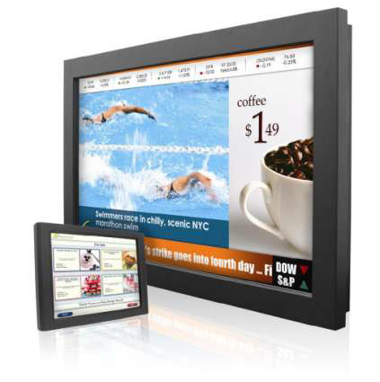
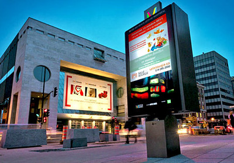
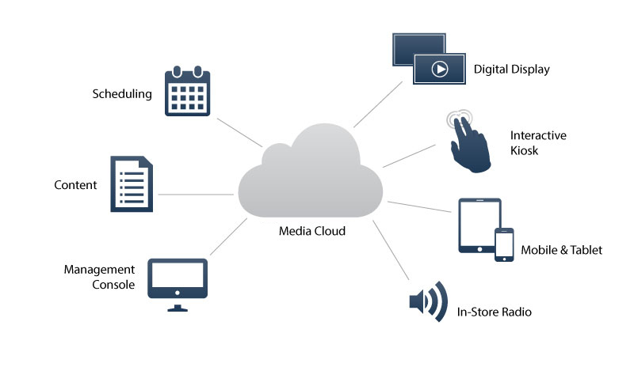
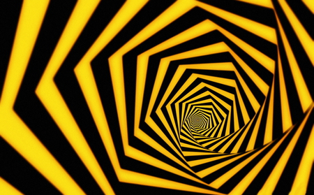
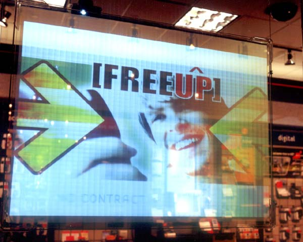
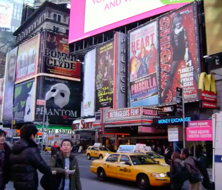
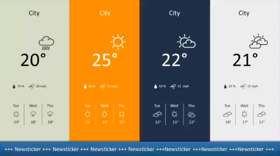
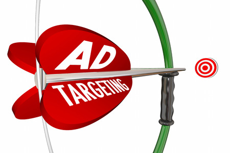
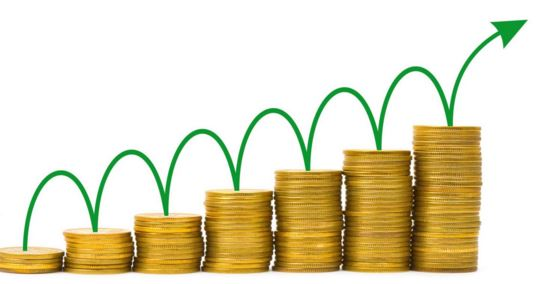

Digital Sginage Software
Digital Signage Nedir ?

Digital signage , bilgi, reklam ve diğer mesajları gösteren bir elektronik ekran biçimidir. Görüntüler perakende satış mağazaları, kamu tesisleri ve kurumsal binalar gibi kamuya ve özel çevrelere yerleştirilen LCD TV, LED Paneller, veya projeksiyon görüntüleri gibi ekipanlarla görüntülenir.
Digital Signage Uygulaması

- Kamuya açık bilgi
- Dahili bilgi
- Reklamcılık
- Marka inşaa etme
- Müşteri davranışına etki eden
- Müşteri deneyimini geliştirme
- Çevrenin geliştirilmesi
XOplayer Nasıl Çalışır
Digital Signage Faydaları
Digital Signage Yüksek Etkidir
|
 |
Dinamik Değişiklikler
| Değiştirmek kolaydır. Klasik yöntemle yazdırıp yeni tabela göndermek yerine internete yükleyip istediğiniz anda yayına verebilirsiniz |  |
- Tanıtım değiştiğinde tekrardan baskıya ve nakliyeye ihtiyacınız yok
- Eski tanıtım kağıtlarını atmaya ihitiyacınız yok
- Nakliye masrafınız olmayacak
- Çevreye yardımcı olursunuz
Alanın daha iyi kullanılması
| Her biri farklı tanıtımı bir ekranda birden fazla mesajla gösterebilirsiniz |  |
Zaman Kontrolü
|
Web Bağlantısı
|
 |
Bölgesel Uyarlama
|

|
Daha iyi hedefleme
| Mekan için mesaj uyarlayabilirsin. Bir spor barındaki spor reklamları yada bir müzik reyonunda konser reklamları vs. |  |
Gelir yaratma
| Dijital Signage üzerindeki reklam alanları başka bir gelir kaynağı oluşturmak için satılabilir. |  |